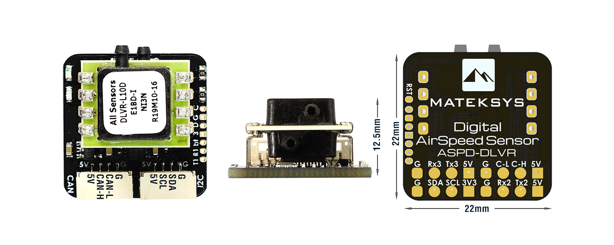
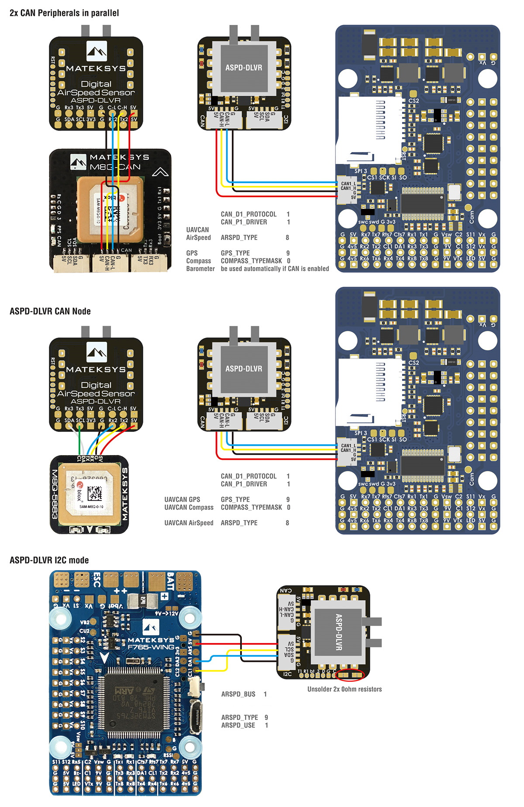

Matek DroneCAN DLVR-10 Airspeed Sensor¶
The Matek ASPD-DLVR is a DLVR-10 sensor with a CAN/DroneCAN or I2C interface. The DLVR airspeed sensors are the highest precision, lowest temperature drift sensors currently supported in ArduPilot. It can also be used to attach a GPS and/or Compass and present them to the autopilot as DroneCAN peripherals.
Features¶
ArduPilot AP_Periph F303 CAN node
DLVR-L10D Airspeed Sensor
- CAN bootloader LED, Blue
Fast blinking, No communication between CAN node and Flight Controllers
Slow blinking, Communicating between CAN node and Flight Controllers
3.3V Power LED, Red
Interfaces:
CAN JST-GH connector, DroneCAN Protocol
I2C JST-GH connector, for interfacing DLVR-L10D in I2C mode (I2C address 0x28)
Solder pads for UART1, Firmware update for non-CAN systems
Solder pads for UART2, Optional for external GPS
Solder pads for UART3, Future expansion for MSP Protocol
Solder pads for I2C and CAN,for optional Compass and CAN daisy-chaining
Specifications:
Input voltage range: 4~6V
Power consumption: 60mA
Operating Temperatures: -20°C to 85°C
Pressure Range: 2500Pa (± 10 inH2O)
Burst Pressure: 75kPa
Speed Range: ±250 km/h
Size: 22mmx22mmx12.5mm
Weight: 4g
Connector Pinouts¶
CAN Port (additional CAN devices can be daisy-chained from this device using the solder pads on the back, see diagrams below)
Pin |
Signal Name |
Voltage/Tolerance |
|---|---|---|
1 |
VCC |
5V |
2 |
CAN_H |
CAN bus |
3 |
CAN_L |
CAN bus |
4 |
GND |
– |
I2C Port to Autopilot for use in place of CAN (enabled by unsoldering two zero ohm resistors, see diagram below.)
Note
Solder pad I2C bus on rear is for attaching an external compass when this port is NOT enabled, and it will be presented to the AutoPilot as a DroneCAN compass.
Pin |
Signal Name |
Voltage/Tolerance |
|---|---|---|
1 |
VCC |
5V |
2 |
I2C SDA |
3.3V/5V |
3 |
I2C SCL |
3.3V/5V |
4 |
GND |
– |
UART3 (Future MSP Port)
Pin |
Signal Name |
Voltage/Tolerance |
|---|---|---|
1 |
VCC |
5V |
2 |
TX (data out) |
3.3V/5V |
3 |
RX (Data in) |
3.3V/5V |
4 |
GND |
– |
UART2 (via solder pads on rear)¶
Can be used to attach a GPS and present it to the autopilot as a DroneCAN device
UART1 (via solder pads on rear)¶
For future firmware upgrades in systems not using CAN/DroneCAN
Wiring Diagrams¶
Setup¶
DroneCAN Mode¶
Verify the following parameters are set on your autopilot via your ground station.
CAN_P1_DRIVER = 1 (assuming its on the first CAN bus of the autopilot)
ARSPD_TYPE = 8 (DroneCAN)
if optional GPS is connected to UART2, then set
GPS_TYPE = 9 (DroneCAN) or if it will be the secondary GPS, set instead
GPS_TYPE2 = 9 (DroneCAN)
Reboot
Make sure the DroneCAN compass driver is not disabled if an optional external Compass is connected to the rear I2C pads:. (COMPASS_TYPEMASK bit 9 should not be set).
I2C Mode¶
ARSPD_TYPE = 9 (DLVR-10)
ARSPD_USE = 1 to enable using the sensor on autopilots external I2C bus
Note
if your autopilot has more than one I2C bus or presents its internal bus externally, may need to set ARSPD_BUS for the one you connect to on the autopilot.
Firmware Update¶
Firmware may be updated in the future to include the option of MSP connectivity. See here for instructions for using the firmware update UART1 pads, or if using DroneCAN, see instructions here